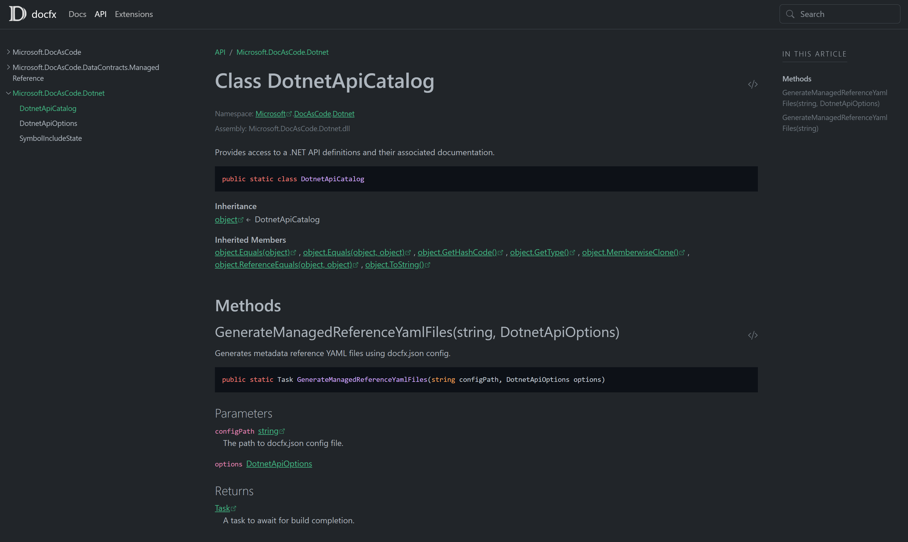

Templates

modern
The modern template


statictoc
The template similar to default template however with static toc. With static toc, the generated web pages can be previewed from local file system.
"template": "statictoc"-t statictoc
mathew
A simple template
"template":["default","mathew/src"]-t default,mathew/srcgit clone https://github.com/MathewSachin/docfx-tmpl.git mathew
DocFX Material
A simple material theme for DocFX
"template":["default","material/material"]-t default,material/materialgit clone https://github.com/ovasquez/docfx-material.git material
darkFX
A dark theme for DocFX .
"template":["default","templates/darkfx"]-t default,templates/darkfxgit clone https://github.com/steffen-wilke/darkfx.git darkfx
UnityFX
A theme for Unity-esque documentation
"template":["default","templates/unity"]-t statictoc
DiscordFX
DocFX template to create documentation similar to Discord
"template":["default","templates/discordfx"]-t default,templates/discordfx
SingulinkFX
Customizable responsive DocFX template designed with memberpage plugin compatibility to produce docs similar to Microsoft .NET docs.
"template":["default","templates/singulinkfx"]-t default,templates/singulinkfx
Minimal
A minimal template.
"template":["default","templates/minimal"]-t default,templates/minimal